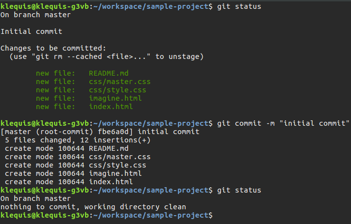

Git Commands in Detail
In this section I will walk you through using some of the most common Git commands while creating a very simple website to illustrate their use. You can use whichever text editor you prefer, but since we installed Atom, let's use it.
In Part 2 of this series we quickly moved through using four basic commands to add files to a Git repository with little or no explanation. This was to show how simple working with Git could be (OK, it isn't all that simple) and to avoid making the introduction complicated. In this part of the series we will go over the same four four commands, as well as $ git push more in detail. After working through these exercises you should have a better understanding of how Git works. Let's jump right in.
A directory is a folder. Windows uses the term 'folder'. Linux calls them 'directories'.
Getting Ready
For this part of the tutorial we will create a new project and a new GitHub repository.
Create a GitHub Account
If you already have a GitHub account you can skip this step.
Create a GitHub account by going to GitHub. Give your user name some thought. GitHub is a very public place which people use to help develop their identity as a developer. You will store your code here and may in the future share it with other developers or with a potential employer to show your abilities.
Create a GitHub Repository
In the upper right-hand corner of the GitHub page, click the '+' sign and select .
Fill out the repository details as show below and then click . Make sure to leave the other choices as is.
Create the Project Files & Directories
It doesn't matter how you create the project files as long as the file and directory names match. I'm using Linux. '~' stands for the 'home' directory and I create all my projects in a folder named 'workspace'. You do not have to create your project in the same location. I am providing command line instructions for creating the project. You could do the same using a file manager or text editor.
... and then execute the following commands. Don't worry what they mean for now, they will be explained below.
In Terminal, make sure the current directory is ~/workspace/
$ cd ~/workspace
$ mkdir sample-project
$ cd sample-project
$ touch index.html README.md
$ mkdir css
$ cd css
$ touch style.css
$ cd ..
Your project structure should now look like this:
Let's put some content in the files.
<!DOCTYPE html>
<head>
<title>sample-project</title>
<link rel="stylesheet" href="css/style.css">
</head>
<body>
<h1>Hello World, once again.</h1>
</body>
body {
background-color: lightgray;
}
#Git Tutorial ReadMe
Open index.html in a browser

Exploring Six Frequently Used Git Commands
In this part of the tutorial we will explore six of the most frequently used Git commands:
- $ git init
- $ git add
- $ git commit
- $ git remote
- $ git push
- $ git status
$ git init - Creating a New Git Repository
This project currently has no Git repository. If you look in file manager or via terminal there is no .git/ directory. If you use $ git status it will show there is no Git repository with the message, "fatal: Not a git repository (or any of the parent directories): .git".

Using $ git init to create a new repository is straight-forward. Here are steps for creating a new project with $ git init
Make sure you are in the sample-project/ directory and create the repository.
$ git init
$ git add - Staging Files
As noted in an earlier part of this tutorial series, $ git add does not add the files to the repository, it adds them to a staging area in preparation for using $ git commit which will actually put them into the repository.
You do not have to add directories to Git. As you add files Git will preserve the directory structure. Let's go through an exercise to illustrate how $ git add works.
Reset the Sample Project
$ git status will show that we have two files and one directory. However, as you know, there is a third file inside of css/ which $ git status does not show. All files are 'untracked', which make sense since we just created a blank repository.

Adding All Files At Once
Using $ git add with the --all option will add all files to the staging area at once, including the style.css file inside of css/. You can also use the shortcut $ git add . (the '.' is required).
$ git add .
$ git status

Add Files One At A Time
You can also add files one at a time. Let's reset everything by removing the .git/ folder so we can give that a try. This will also illustrate that a Git repository is just a folder. On Mac & Linux you can use the below command or a file manager if you prefer.
$ rm -rf .git
Using $ git status will show there is no repository.
$ git status
Re-initialize the repository and check status. Status will show the 'untracked files' again.
$ git init
$ git status
Now we can demonstrate adding one file at a time.
$ git add README.md
As you can see, only README.md is staged (i.e., under 'Chagnes to be commited:')
Adding multiple files but not all
Now let's explore adding multiple files instead of all. To do so, we will need to add some files to our project. We will use $ touch to create the files and $ls -l to see the newly created files
$ touch imagine.html
$ ls -l
$ cd css
$ touch master.css
$ ls -l
$ cd ..
Now we will add all files in the css/ directory. Remember, README.md was already staged and is still there.
$ git add css/*

Finally, we will add all files in the current directory that start with 'i'. This will add imagine.html and index.html to the staging area.
$ git add i*
$ git commit- Adding Files to the Repository
As already stated, $ git commit moves files from the staging area to the repository. If you look at the Git documentation you will see that $ git commit has many options. We will use only one of these -m which means message. The command will look like this:
$ git commit -m "commit message goes here"
Commit Messages
Commit messages are serious business. It is a best practice to always have a message and if you are working with a team, committing without a message will most likely result in some form of negative feedback.
The message can and often is very short. It should describe the changes to the files being committed. To achieve this you need to stage and commit files with a related change such that your message would be something like, "Updated sidebar and related styles", for which you are likely committing a .html and .css file. If you add to this commit a change made to an unrelated .html file then your commit message becomes wordy like, 'did this to these files and that to those files, etc.'. Additionally, it becomes hard to revert one change without the other and for another developer to understand the goal of your change. Therefore, commits should include the files for one change and the message should succintly describe that change.
All of this does not mean you cannot make unrelated changes to multiple files before committing. You simply move the files for one change into the staging area and commit, then stage the files for the next change and commit.
Let's commit our files.
This is the first time they are being committed and the traditional message for that is, "initial commit". Commit will move everything in the staging area to the repository. If the results of $ git status are not currently on your screen, use it first to see what you are committing.
$ git status
$ git commit -m "initial commit"
{kind=link}
Using the above picture, let's take a closer look at the message produced by $ git commit.
| [master (root-commit) fbe6a0d] initial commit | The commit was to branch 'master'. The message you entered was 'initial commit'. fbe6a0d is an identifer for the commit. Yours will differ. |
| 5 file changed | Right, we changed 5 files. A new files is always changed. |
| 12 insertions (+) | Each new line counts as an insertion. |
| create mode | They are new files so they were created. |
$ git remote - What is a Remote?
As defined in the Git documentation, a remote is: "A repository which is used to track the same project but resides somewhere else." Your local Git repository can maintain one or more references to one or more remotes. It stores these references with a 'shortname' which is 'origin' by default. The shortname is like a bookmark you create in you web browser. It has a name and a URL.
The below diagram shows a local repository with one remote located on GitHub. The remote has the default shortname of 'origin'.
|
Local (your computer) |
Remote (GitHub) |
||||
|
|
|||||
| origin = https://github.com/petehunt/webpack-howto.git (fetch) | |||||
| origin = https://github.com/petehunt/webpack-howto.git (push) | |||||
| = repository | |||||
| The remote repository on GitHub is located at http://github.com/peterhunt/webpack-howto.git | |||||
| The remote's short name is 'origin'. | |||||
You may hear people refer to 'origin' as a remote. Don't be confused by this. Origin is the shortname for the remote repository which is on Github
Let's do a brief exercise to learn about remotes. Make sure the current directory is workspace/ and then execute the below command.
$ git clone https://github.com/petehunt/webpack-howto.git

You have just cloned (i.e., made a local copy of) the webpack-howto project.
There is no reason for downloading webpack-howto other than I have recently learned to use Webpack and am familiar with this repository.
Change to the webpack-howto/ directory and then use $ git status.
$ cd webpack-howto
$ git status
{kind=link}
As you can see there is a Git repository there. Also take note where is says 'origin/master'. 'origin' is the short name for the remote and 'master' is the current branch.
Now take a look at the files downloaded in a file manager. You can see that all the projects current files and the Git repository have been downloaded to your machine.

Using the $ git remote -v command will show you a list of remotes. Notice that the URL for the remote is the same one we used with $ git clone above.
$ git remote -v
{kind=link}
The shortname 'origin' has no special significance other than this is the default used by Git. To illustrate this point, let's add another remote using the same URL.
$ git remote add myremotename https://github.com/petehunt/webpack-howto.git
$ git remote -v

The above screenshot shows that you have added a new remote with a shortname of 'myremotename'.
$ git clone - Create a Copy of a Repository
$ git clone creates a copy of a repository. It it's simpliest form, git clone looks like this:
git clone <url to git repository>
We saw an example of using $ git clone above so we will move on to $ git push.
$ git push - Pushing Code to GitHub
$ git push will move the changes in your local repository to the remote repository on GitHub.
The syntax of $ git push is...
git push [remote-name] [branch-name]
Switch you current directory back to ~/workspace/sample-project/
Since our remote has a short name of 'origin' and our current branch-name is 'master'. Execute the below command which will push to the remote named 'origin' and the 'master' branch.
$ git push origin master
When prompted, enter you GitHub user name and password.
That's it, your changes are now in the GitHub repository! Take a look at your project's GitHub page to confirm the files are added.
See Also
- Git documentation, git-scm.com
- Git Cheat Sheet, GitHub
- Git Reference Manual, git-scm.com